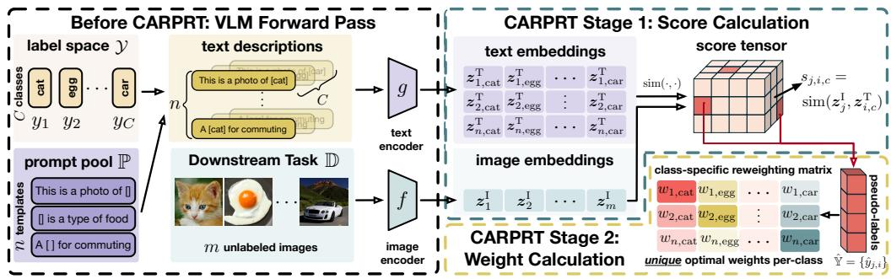
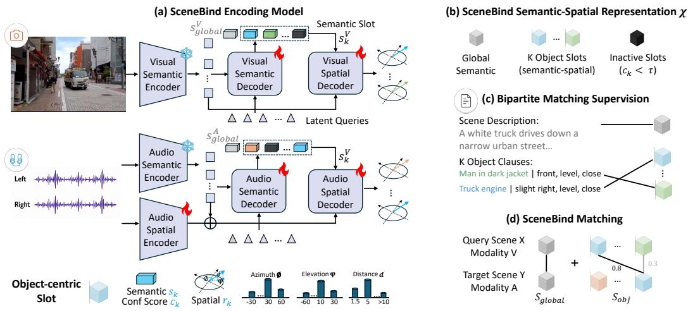
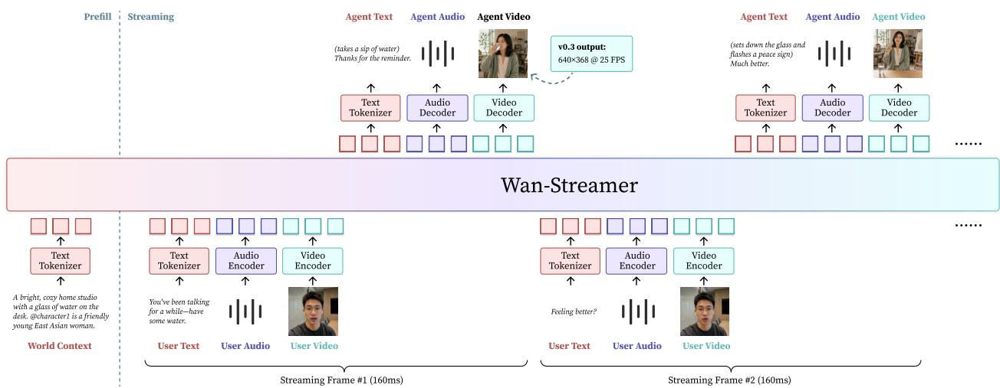
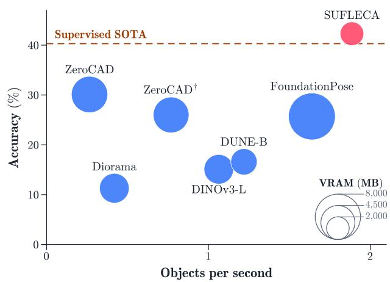

7 月 18 日：SeeSE3 等视觉表征主线更新
本期聚焦通用视觉表征、视觉语言预训练与视频自监督中最值得跟进的论文，并保留 CCF A/B、OpenReview 与 arXiv 状态线索。
先读 SeeSE3：它比常规 depth/normal probing 更接近“特征空间是否真的带有 SE(3) 几何”的问题。接着读 Emergent Region-Level Facial Correspondence，重点看 DINOv3 中间层为什么比最终层更适合 dense correspondence，但不要把 face-only 结论外推过头。第二轮读 AlphaWiSE、CARPRT、UPrompt、GeoDetect：它们分别对应 continual multimodal alignment、zero-shot prompt weighting、跨尺度 VLM 表征和 VLP embedding geometry。最后扫 SceneBind/HDR/VideoChat3/Wan-Streamer 的视频和空间表征系统线，Symbal 用作 image-text 自训练数据审计工具，P3 条目只需抓方法组件。
论文索引
| 优先级 | 论文 | 类型 | 相关性 | 一句话理由 |
|---|---|---|---|---|
| P0 | SeeSE3: Emergence of 3D Space in Vision Features | arXiv new/cross; self-supervised VFM 3D feature geometry | 高 | 直接探测自监督视觉基础模型 latent subspace 是否编码 SE(3) 几何，是今天最贴近通用视觉表征机制的论文。 |
| P0 | Emergent Region-Level Facial Correspondence in Frozen Vision Foundation Models | arXiv new/cross; DINOv3 dense correspondence analysis | 高 | 用 frozen self-supervised DINOv3 做 region-level correspondence，直接回答 dense visual features 的空间一致性。 |
| P1 | AlphaWiSE: Adaptive Weight Interpolation for Continual Multimodal Representation Learning | arXiv new/cross; continual multimodal representation learning | 高 | 关注 CLIP 式共享嵌入空间在连续数据到来时如何保持 cross-modal alignment。 |
| P1 | CARPRT: Class-Aware Zero-Shot Prompt Reweighting for Black-Box Vision-Language Models | arXiv new/cross; ICLR 2026; black-box VLM prompt reweighting | 高 | 训练免费地修正 CLIP/VLM zero-shot prompt ensemble，对理解 text prompt 与 visual class 表征依赖有价值。 |
| P1 | U-shaped Multi-granularity Learning for Vision-Language Models | arXiv new; VLM multi-granularity prompt learning | 高 | 试图同时保留 global context 与 local details，正好对应 VLM dense prediction 的表征粒度问题。 |
| P1 | GeoDetect: Geometric Adversarial Detection for VLPs | arXiv new/cross; ECCV 2026; VLP embedding geometry | 高 | 把 VLP embedding anisotropy 与 adversarial off-manifold behavior 联系起来，是表征几何诊断方向。 |
| P2 | SceneBind: Binding What and Where Across Vision, Audio and Language | arXiv new/cross; omni-modal semantic-spatial representation | 中高 | 用 object-centric semantic-spatial slots 统一 vision/audio/language，方法可迁移到视觉-语言 spatial grounding。 |
| P2 | Hierarchical Denoising For Multi-Step Visual Reasoning | arXiv new; hierarchical video latent reasoning | 中高 | 把 video foundation/generation model 的 latent 组织成 coarse-to-fine reasoning hierarchy，连接视频生成、世界模型和视觉推理。 |
| P2 | Video = World + Event Stream | arXiv new; Wan-Streamer v0.3; video pretraining view | 中高 | 提出“video = world + event stream”的通用预训练任务表述，和视频基础模型/交互式世界模型有关。 |
| P2 | VideoChat3: Fully Open Video MLLM for Efficient and Generalist Video Understanding | arXiv new; open video MLLM pretraining/system | 中高 | 开放视频 MLLM 的训练策略、I3D-ViT 和视频数据合成管线，对视频表征工程有参考价值。 |
| P2 | Symbal: Detecting Systematic Misalignments in Model-Generated Captions | arXiv new/cross; ICML 2026; image-text data audit | 中高 | 检测 MLLM 自动 caption 中与视觉特征系统关联的错误，对 image-text 数据自训练和数据清洗有价值。 |
| P3 | SUFLECA: Scaling Up Feature Learning for CAD-to-image Alignment | arXiv new; geometry-grounded feature learning; CAD alignment | 中 | 从 pretrained visual representations 中学习 geometry-aware features，任务偏 CAD/机器人但方法有迁移价值。 |
| P3 | GlobalForge: Towards Robust AI-Generated Image Detection | arXiv new; contrastive robust visual features for AIGI detection | 中 | 用 contrastive structural loss 逼模型依赖 global structure 而非局部生成器伪迹，是鲁棒视觉特征学习案例。 |
| 扫读 | FlashDecoder: Real-Time Latent-to-Pixel Streaming Decoder with Transformers | arXiv new/cross; CVPR2026; latent video decoder | 中 | 不是表征学习论文，但 latent-to-pixel decoder 直接影响视频 latent model 的可用性和部署成本。 |
主线阅读

SeeSE3: Emergence of 3D Space in Vision Features
高相关；详见方法、贡献和实验边界。
方法：直接探测自监督视觉基础模型 latent subspace 是否编码 SE(3) 几何，是今天最贴近通用视觉表征机制的论文

Emergent Region-Level Facial Correspondence in Frozen Vision Foundation Models
高相关；详见方法、贡献和实验边界。
方法：用 frozen self-supervised DINOv3 做 region-level correspondence，直接回答 dense visual features 的空间一致性

AlphaWiSE: Adaptive Weight Interpolation for Continual Multimodal Representation Learning
高相关；详见方法、贡献和实验边界。
方法：关注 CLIP 式共享嵌入空间在连续数据到来时如何保持 cross-modal alignment

CARPRT: Class-Aware Zero-Shot Prompt Reweighting for Black-Box Vision-Language Models
高相关；详见方法、贡献和实验边界。
方法：训练免费地修正 CLIP/VLM zero-shot prompt ensemble，对理解 text prompt 与 visual class 表征依赖有价值

U-shaped Multi-granularity Learning for Vision-Language Models
高相关；详见方法、贡献和实验边界。
方法：试图同时保留 global context 与 local details，正好对应 VLM dense prediction 的表征粒度问题

GeoDetect: Geometric Adversarial Detection for VLPs
高相关；详见方法、贡献和实验边界。
方法：把 VLP embedding anisotropy 与 adversarial off-manifold behavior 联系起来，是表征几何诊断方向

SceneBind: Binding What and Where Across Vision, Audio and Language
中高相关；详见方法、贡献和实验边界。
方法：用 object-centric semantic-spatial slots 统一 vision/audio/language，方法可迁移到视觉-语言 spatial grounding

Hierarchical Denoising For Multi-Step Visual Reasoning
中高相关；详见方法、贡献和实验边界。
方法：把 video foundation/generation model 的 latent 组织成 coarse-to-fine reasoning hierarchy，连接视频生成、世界模型和视觉推理

Video = World + Event Stream
中高相关；详见方法、贡献和实验边界。
方法：提出“video = world + event stream”的通用预训练任务表述，和视频基础模型/交互式世界模型有关

VideoChat3: Fully Open Video MLLM for Efficient and Generalist Video Understanding
中高相关；详见方法、贡献和实验边界。
方法：开放视频 MLLM 的训练策略、I3D-ViT 和视频数据合成管线，对视频表征工程有参考价值

Symbal: Detecting Systematic Misalignments in Model-Generated Captions
中高相关；详见方法、贡献和实验边界。
方法：检测 MLLM 自动 caption 中与视觉特征系统关联的错误，对 image-text 数据自训练和数据清洗有价值

SUFLECA: Scaling Up Feature Learning for CAD-to-image Alignment
中相关；详见方法、贡献和实验边界。
方法：从 pretrained visual representations 中学习 geometry-aware features，任务偏 CAD/机器人但方法有迁移价值

GlobalForge: Towards Robust AI-Generated Image Detection
中相关；详见方法、贡献和实验边界。
方法：用 contrastive structural loss 逼模型依赖 global structure 而非局部生成器伪迹，是鲁棒视觉特征学习案例

FlashDecoder: Real-Time Latent-to-Pixel Streaming Decoder with Transformers
中相关；详见方法、贡献和实验边界。
方法：不是表征学习论文，但 latent-to-pixel decoder 直接影响视频 latent model 的可用性和部署成本